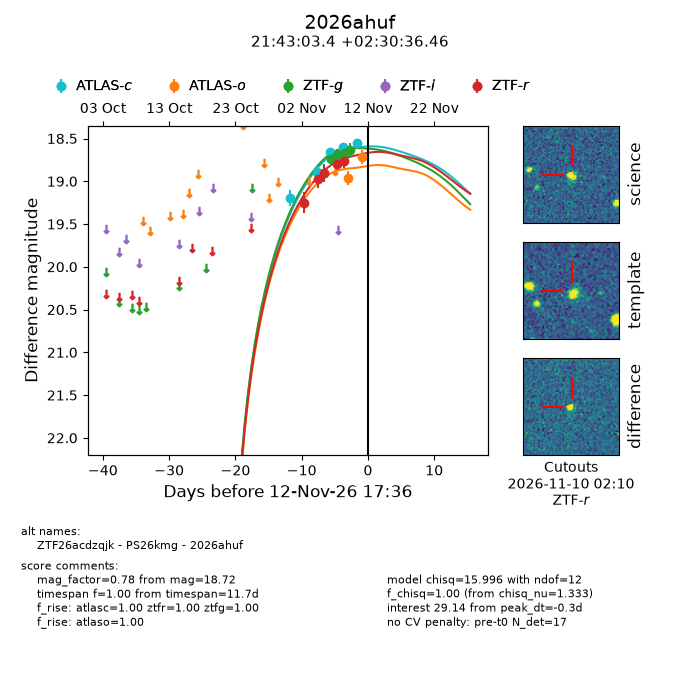
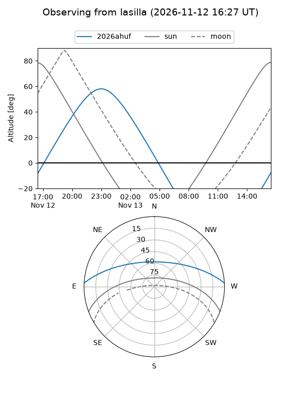
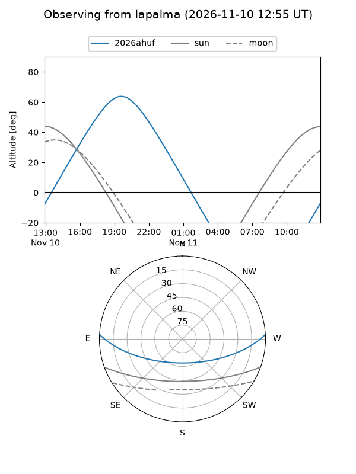
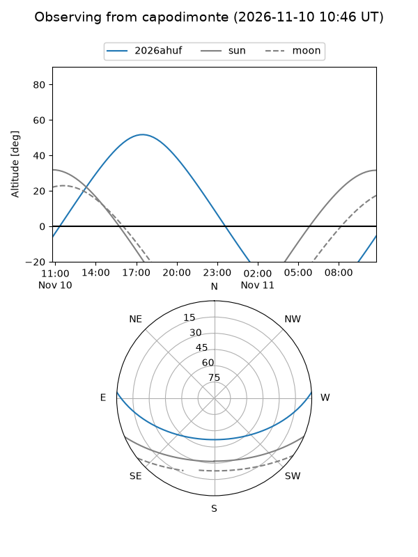
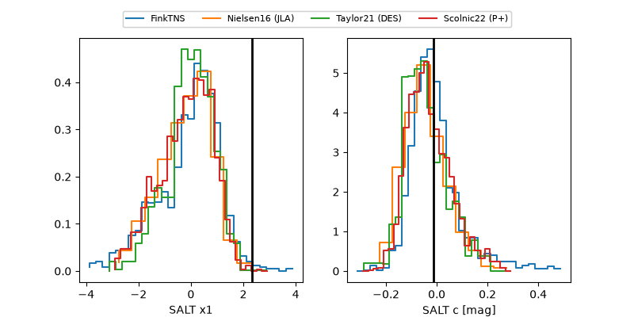

2026ahuf
Target 2026ahuf at 2026-11-12 17:38
Aliases and brokers:
FINK-ZTF: ztf.fink-portal.org/ZTF26acdzqjk
Lasair-ZTF: lasair-ztf.lsst.ac.uk/objects/ZTF26acdzqjk
ALeRCE-ZTF: alerce.online/object/ZTF26acdzqjk
YSE-PZ: ziggy.ucolick.org/yse/transient_detail/2026ahuf
TNS name: wis-tns.org/object/2026ahuf
Direct TNS query: direct search
alt names
ZTF26acdzqjk (ztf,fink_ztf)
2026ahuf (tns,yse)
PS26kmg (panstarrs)
Coordinates:
equatorial (ra, dec) = 325.7642,+2.51013
equatorial (HMS+DMS) = 21:43:03.41,+02:30:36.46
galactic (l, b) = (58.4359,-35.82671)
Flags:
peak dt: -0.3
Photometry:
last atlasc=18.55, atlaso=18.72, ztfg=18.64, ztfr=18.76
5 atlasc, 2 atlaso, 5 ztfg, 5 ztfr detections
Lightcurve

Visibility



Additional plots
